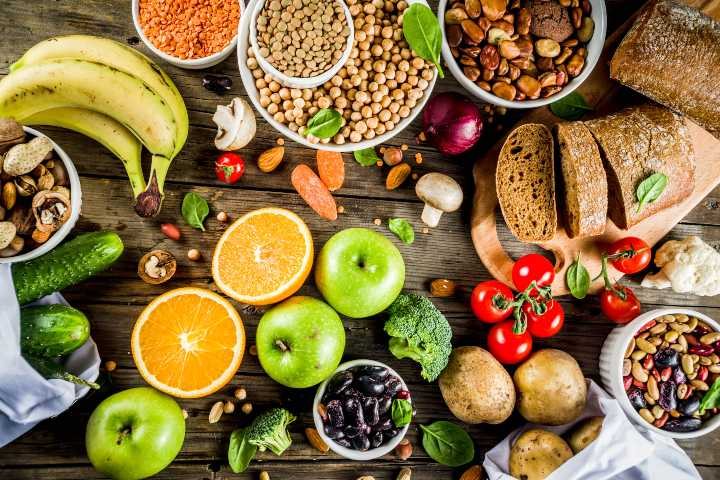
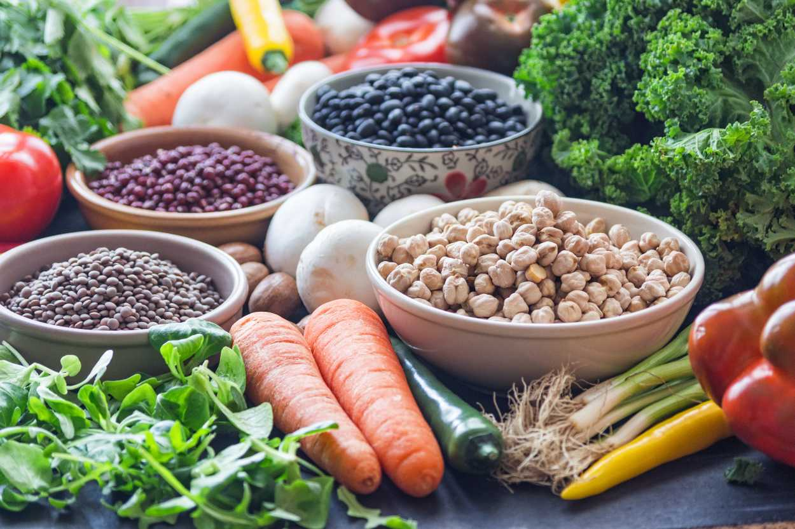

Glisemik indeks diyeti nedir?

Glisemik indeks, GI şeklinde kısaltması da yaygın olarak kullanılan ve yiyecekleri kan şekeri üzerindeki etkilerine göre 1'den 100'e kadar puanlandıran özel bir hesaplama. Karbonhidrat içeren besinlerin kan şekerini etkileme hızını ölçen bu hesaplamaya göre glisemik indeksi yüksek besinleri tüketmeniz halinde kan şekeriniz hızla yükseliyor ve bu da birçok olumsuz durumun oluşmasına sebep olabiliyor. Bu sebeple glisemik indeksi düşük besinler tüketmenizin çok daha sağlıklı olduğu söyleniyor. Çünkü glisemik indeksi düşük yiyecekleri tükettiğinizde kan şekeriniz aniden değil, yavaş yavaş yükseliyor ve bu da hem uzun süreli tokluk hissine hem de çok daha sağlıklı beslenmenize destek oluyor.
Tüm bunlardan yola çıkarak başta diyabet hastalığı bulunanlar olmak üzere kan şekerini dengelemeye, yükselmesini önlemeye dikkat eden herkesin glisemik indeks diyetini doktor kontrolünde uygulayabileceği, en azından glisemik indeksi yüksek besinlerden olabildiğince uzak durarak daha sağlıklı beslenebileceği de söyleniyor.
Glisemik indeks diyeti nasıl yapılır?

Glisemik indeks nedir, ne işe yarar öğrendiğimize göre glisemik indeks diyeti nasıl yapılır öğrenme zamanı geldi. Glisemik indeks diyetinde temel amaç yukarıda da söylediğimiz gibi glisemik indeksi yüksek besinlerden olabildiğince uzak durmak, glisemik indeksi düşük besinleri tercih ederek kan şekerinin aniden yükselmesinin önüne geçmek. Bir başka ifadeyle bu diyetin amacı diğer birçok diyet gibi doğrudan kısa sürede zayıflamayı sağlamak değil, daha sağlıklı beslenme alışkanlıkları kazandırarak uzun vadede sağlıklı bir yaşam sürmenizi sağlamak. Elbette siz, bu diyeti kilo vermek için de değerlendirebilirsiniz. Ancak bu durumda doktorunuzun ve diyetisyeninizin size en uygun listeyi hazırlaması için onlara danışmanız gerektiğini unutmamalısınız.